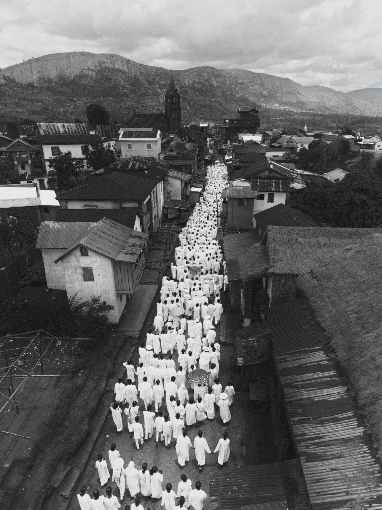
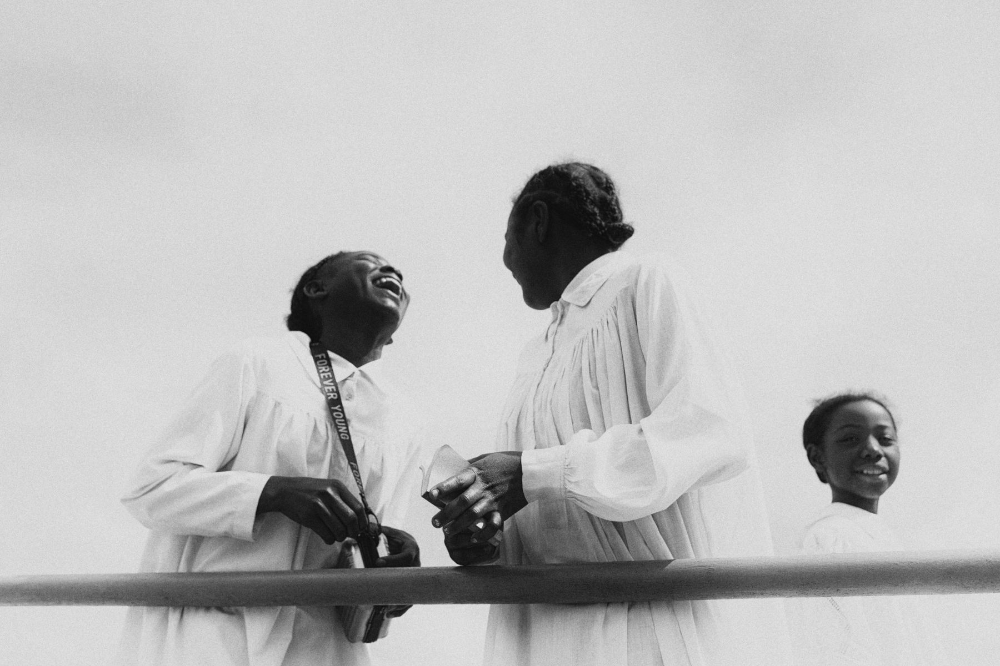
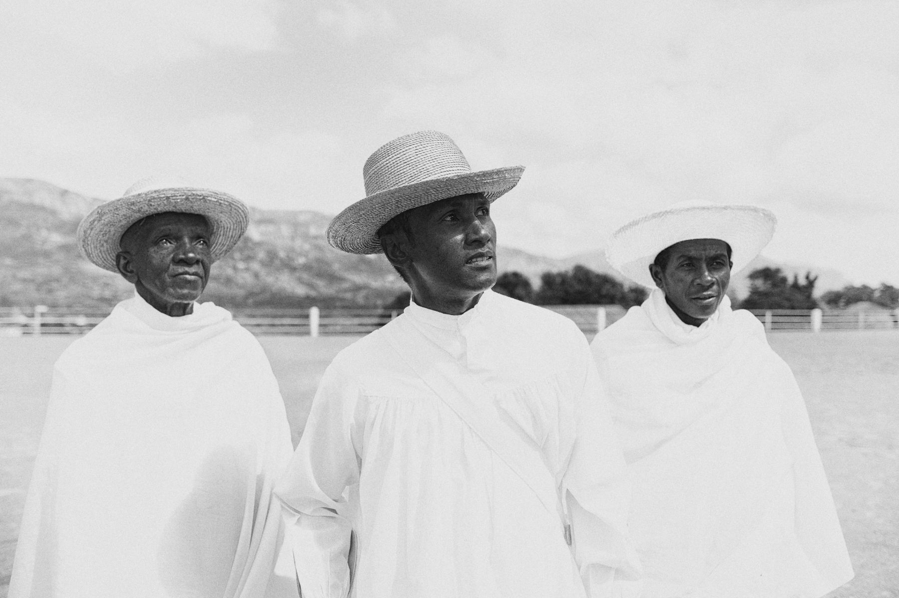
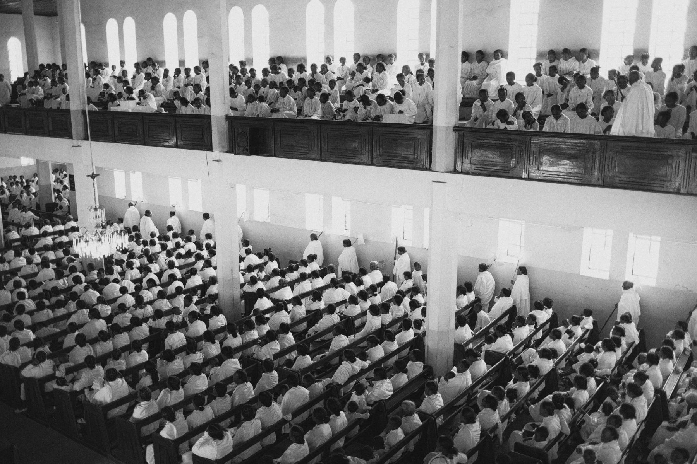
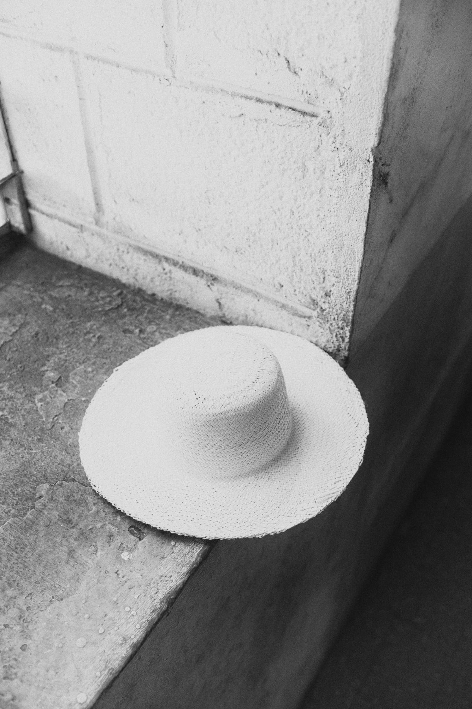
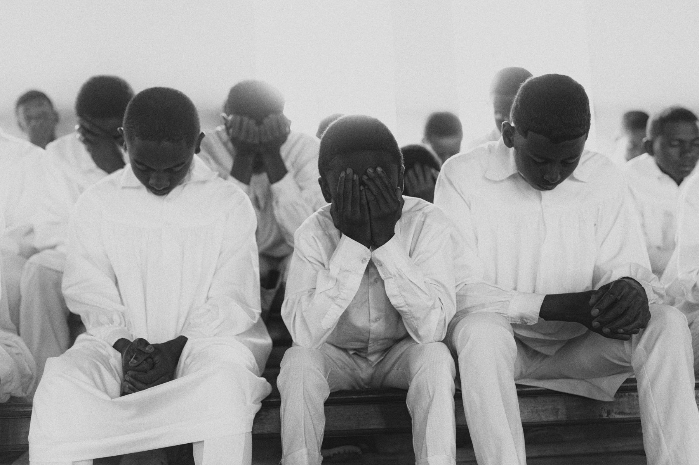
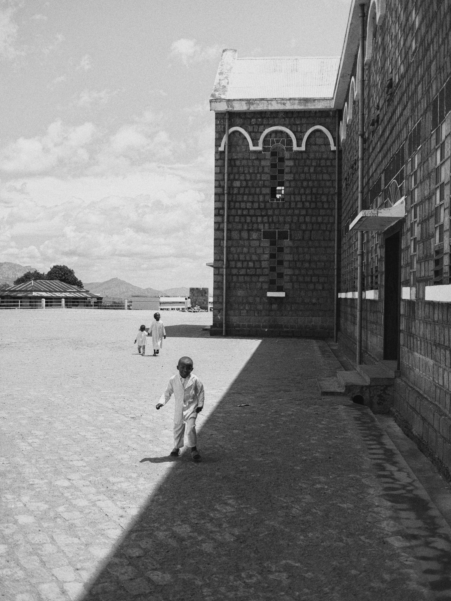
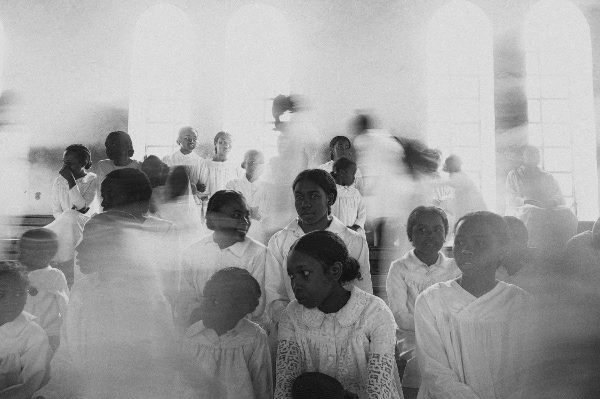
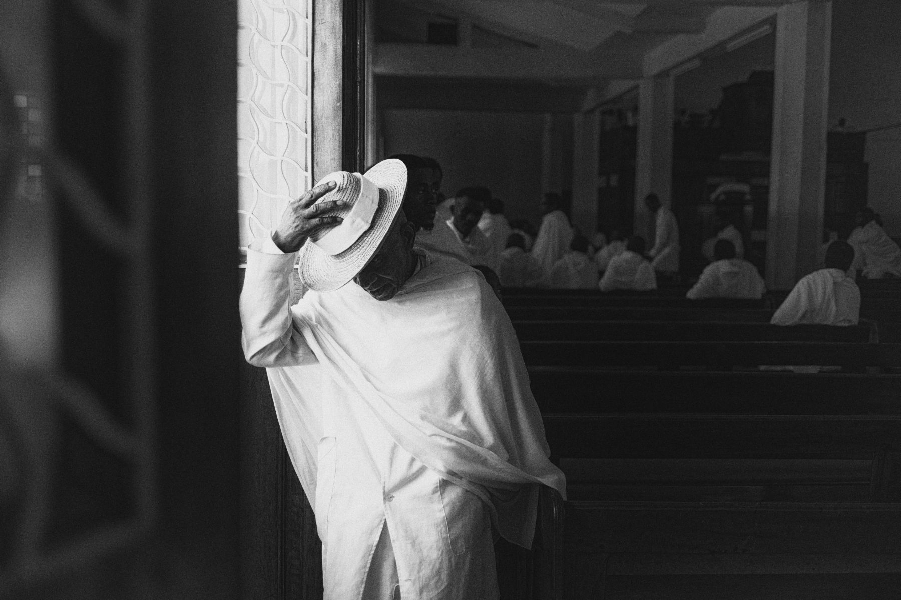

The White Village01 / 09

The White Village02 / 09

The White Village03 / 09

The White Village04 / 09

The White Village05 / 09

The White Village06 / 09

The White Village07 / 09

The White Village08 / 09

The White Village09 / 09